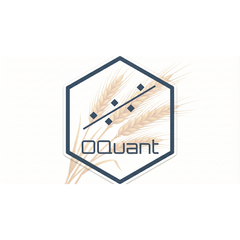

Turning data into defensible decisions
OQuant is an independent data science consultancy founded in March 2025 by Rodrigo Hermont Ozon — economist, econometrician, and PhD researcher in Systems and Industrial Engineering. The premise is simple: business decisions deserve the same rigor as peer-reviewed research. OQuant combines econometric modeling, statistical validation, and modern AI engineering to deliver analyses you can defend in front of a board, an auditor, or a regulator — not black boxes, and not slideware.
What OQuant does
Forecasting & Time Series
Demand, price, and volatility forecasting with classical econometrics (ARIMA, GARCH-family, GAMLSS, Bayesian MSGARCH) and machine learning hybrids — with honest out-of-sample validation, not curve-fitting.
Econometric Modeling & Causal Inference
Answering "what actually drives this?" — regression diagnostics, panel and instrumental-variable methods, quasi-experimental designs, and Bayesian multicausal models grounded in economic theory.
Risk Analytics & Simulation
Quantitative risk measurement and scenario analysis: Monte Carlo simulation, extreme value modeling, portfolio and multi-objective optimization for pricing, sourcing, and investment decisions.
Machine Learning & Predictive Modeling
Supervised and deep learning models (including CNN+LSTM architectures and survival analysis for predictive maintenance) built with proper feature engineering, ablation testing, and MLOps discipline.
Business Intelligence & Decision Support
KPI frameworks, dashboards, and analytical pipelines that turn scattered data into a single, trusted view — from data modeling and governance documentation to executive-ready reporting.
Generative AI for Business
Practical LLM applications: internal chatbots, multi-agent and sub-agent workflow orchestration, and AI-assisted knowledge management — designed around your processes, with measurable value.
Organizations OQuant has served
Grupo Fleury
Consulting work for one of Brazil's leading healthcare and diagnostic medicine groups.
Aurora Alimentos
Consulting work for one of Brazil's largest food industry cooperatives.
Cogna Educacional
Consulting work for one of Brazil's largest education companies.
Client engagements are confidential; sector references are shared with permission and project details remain under NDA.
A disciplined engagement model
Diagnostic
We start with the business question and the decision it must inform. I audit the available data, map the constraints, and define success criteria before a single model is fit. If the data cannot support the question, you hear that on week one — not at delivery.
Modeling & validation
Candidate models are built, stress-tested, and compared against honest baselines with out-of-sample and backtesting protocols. Assumptions are documented, uncertainty is quantified, and every result comes with its limitations stated plainly.
Deployment & handoff
Deliverables are reproducible: versioned code, documented pipelines, and dashboards or APIs your team can own. I train your people so the solution outlives the engagement.
Monitoring & advisory
Optional ongoing support: performance monitoring, model recalibration, and advisory sessions as new questions emerge — so the analytics keep pace with the business.
What you are actually buying
PhD-level rigor
Active doctoral research in multi-objective optimization, Bayesian econometrics, and time series at PUCPR, an MSc in Economic Development (UFPR), peer-reviewed publications, and reviewer roles for journals such as Applied Soft Computing. The methods behind your project are the ones surviving academic scrutiny.
15+ years of industry track record
Hands-on delivery inside large organizations — Volvo Group, BRF, CNH Industrial, Unimed — plus UNDP/UN research work and years of economic analysis for industry federations. I know how corporate data, politics, and deadlines actually behave.
End-to-end capability
From statistical theory to production code: econometric specification, Python/R/SQL implementation, cloud data pipelines (Azure, Databricks, PySpark), and MLOps. One consultant covers the full path from hypothesis to deployed system.
Let’s talk about your problem
A first conversation costs nothing and usually clarifies whether quantitative modeling can move your decision — and whether I am the right person to build it.